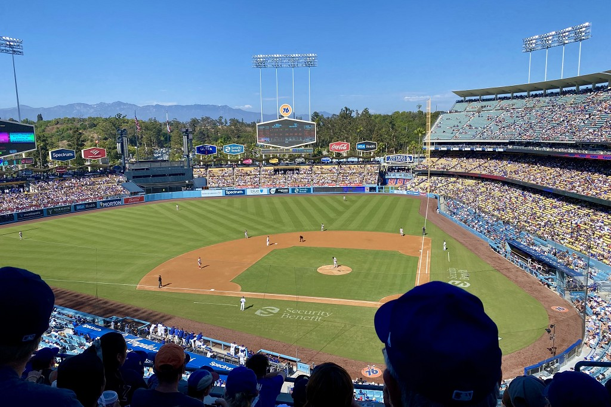

關於道奇隊
洛杉磯道奇隊是美國職棒大聯盟的一支球隊。球隊最早來自紐約布魯克林，後來搬到洛杉磯。道奇隊的代表色是藍色，主場是道奇體育場。

幾個重要年份
- 1883 年：球隊在布魯克林成立。
- 1958 年：球隊搬到洛杉磯，成為洛杉磯道奇隊。
- 1962 年：道奇體育場啟用，成為球隊的主場。
棒球好玩的地方
我喜歡棒球比賽的團隊合作，也喜歡和朋友一起看球、為喜歡的球隊加油。每一場比賽都有不同的發展，這也是棒球有趣的原因。
你也喜歡棒球嗎？可以到道奇隊的官方網站看看球隊消息。
前往道奇隊官方網站道奇體育場位置
道奇體育場位於美國加州洛杉磯。你可以在下方地圖查看球場位置。